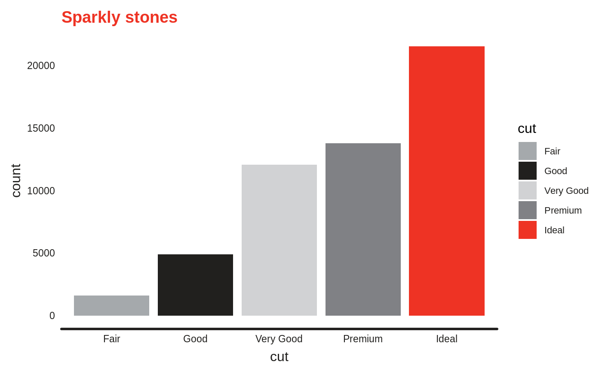
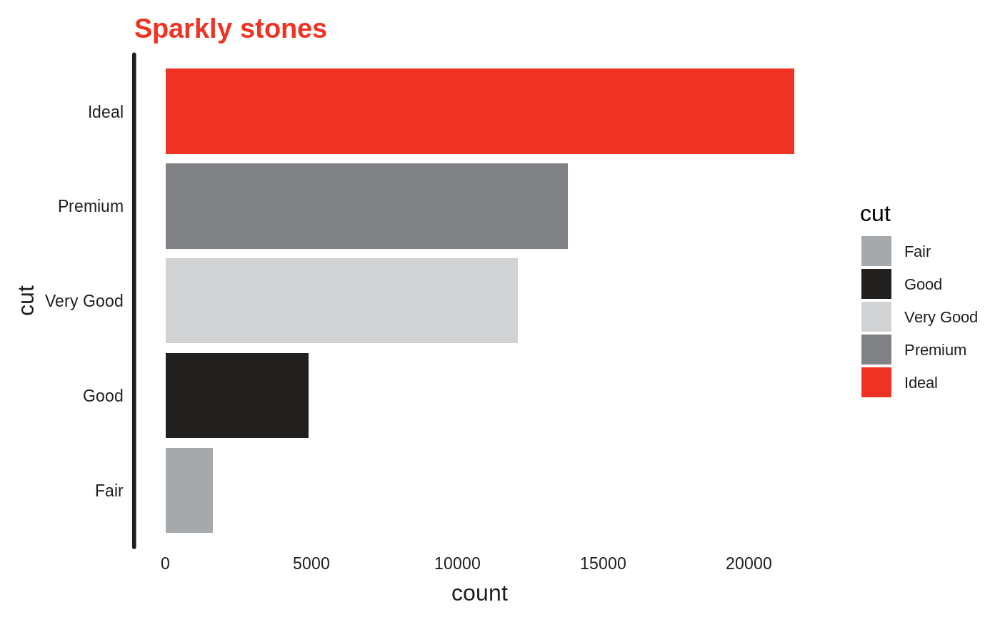

Introduction to artyfarty
Bart Smeets
2019-03-22
introduction.Rmdartyfarty focuses on providing easy access to a few ‘nice’ ggplot theme, it also includes a number of predefined palettes and watermark convenience functions.
artyfarty is a work in progress. For now you can install the development version using devtools.
Available themes
dataroots
farty
scientific
monokai
monokai_full
flat
five38
ggplot(diamonds) +
geom_bar(aes(cut, fill=cut)) +
theme_five38() +
ggtitle("Sparkly stones") +
scale_fill_manual(values = pal("five38"))retro
ft
ggplot(diamonds) +
geom_bar(aes(cut, fill=cut)) +
theme_ft() +
ggtitle("Sparkly stones") +
scale_fill_manual(values = pal("ft"))
ggplot(diamonds) +
geom_bar(aes(cut, fill=cut)) +
theme_ft(grid_lines = "horizontal") +
ggtitle("Sparkly stones") +
scale_fill_manual(values = pal("ft")) +
coord_flip()
ggplot(mtcars) +
geom_point(aes(x=wt, y=qsec, color=as.factor(cyl))) +
theme_ft() +
ggtitle("Vroom") +
scale_color_manual(values = pal("ft"))
bain
ggplot(diamonds) +
geom_bar(aes(cut, fill=cut)) +
theme_bain() +
ggtitle("Sparkly stones") +
scale_fill_manual(values = pal("bain"))ggplot(diamonds) +
geom_bar(aes(cut, fill=cut)) +
theme_bain(grid_lines = "horizontal") +
ggtitle("Sparkly stones") +
scale_fill_manual(values = pal("bain")) +
coord_flip()
economist
ggplot(diamonds) +
geom_bar(aes(cut, fill=cut)) +
theme_economist() +
ggtitle("Sparkly stones") +
scale_fill_manual(values = pal("economist"))
Palettes
A number of palettes are available through the pal() function. A visual overview can be acquired as follows:
Check out the examples above to see how these palettes can be applied, refer to the ?pal() documentation for more details
Watermarks
A watermark might not add much value to a plot, but there are times that you just need to be able to to add a simple watermark.
ggplot(diamonds) +
geom_bar(aes(cut, fill=cut)) +
theme_retro() +
ggtitle("Sparkly stones") +
scale_fill_manual(values = pal("retro")) +
watermark_img("Rlogo.png", location="tl", alpha=.5)ggplot(mtcars) +
geom_point(aes(x=wt, y=qsec, color=as.factor(cyl))) +
theme_ft() +
ggtitle("Vroom") +
scale_color_manual(values = pal("ft")) +
watermark_txt("watermark", location="br")
ggplot(mtcars) +
watermark_txt("watermark", location="center", rot=45, fontsize=36, alpha=.2) +
geom_point(aes(x=wt, y=qsec, color=as.factor(cyl))) +
theme_ft() +
ggtitle("Vroom") +
scale_color_manual(values = pal("ft"))